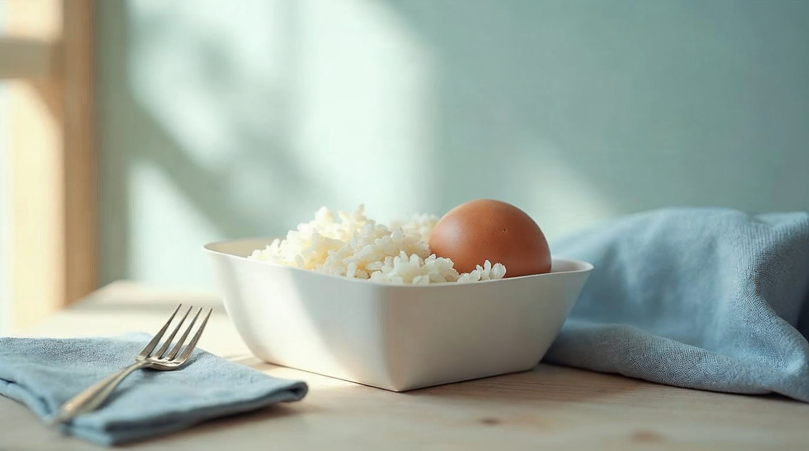
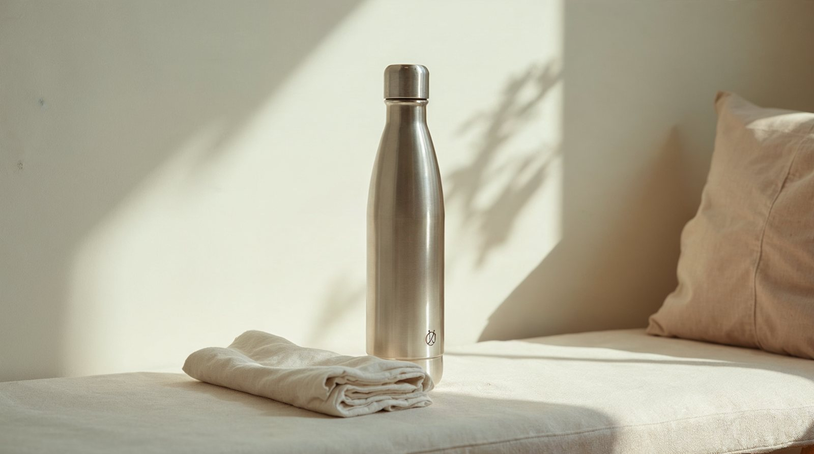
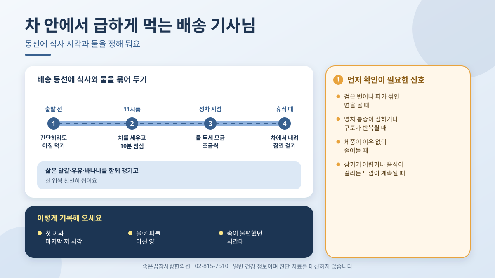

이종호 한의사 감수좋은꿈참사랑한의원 대표원장 (한의사 면허번호 19769)발행 2026-11-23 · 수정 2026-11-26
이 글의 차례
- 왜 이런 불편이 생길 수 있나요
- 왜 차 안에서 먹으면 같은 음식도 더 불편할까요?
- 속쓰림과 더부룩함, 어떻게 나눠 보면 좋을까요?
- 먼저 이렇게 여쭙니다
- 일상에서 먼저 해 볼 수 있는 것
- 물은 어떻게 나눠 마시면 화장실 부담이 덜할까요?
- 차 안에 두면 좋은 것, 덜 두면 좋은 것
- 쉬는 날에는 어떻게 먹으면 좋을까요?
- 졸음과 허기를 헷갈리지 않으려면
- 겨울철 배송길에는 무엇을 더 챙길까요?
- 상황별 예시
- 한꺼번에 바꾸기 어렵다면, 이 순서로 해 보세요
- 스스로 점검해 보세요
- 한의원에서 함께 살필 수 있는 경우
- 얼마나 지켜보고 언제 상담할까요
- 이렇게 기록해 오시면 상담이 쉬워집니다
- 이런 증상은 먼저 확인이 필요합니다
- 관련 글
택배와 배달 일은 시간에 쫓기다 보니 차 안에서 빵이나 김밥으로 급하게 끼니를 때우는 날이 많습니다. 일이 끝나면 속이 쓰리거나 더부룩하다면, 하루 식사 시각과 먹는 속도, 물 마시는 습관부터 함께 살펴봅니다.
배송 일을 하는 분께 하루 식사를 여쭈면 "신호 대기할 때 한 입, 다음 집 가기 전에 한 입" 하는 식으로 답하시는 경우가 많습니다. 물량이 많은 날일수록 끼니는 뒤로 밀리고, 운전대를 잡은 채 먹는 시간이 길어집니다.
이런 생활이 몇 달씩 이어지면 속이 불편한 것을 일의 일부처럼 여기게 됩니다. 하지만 동선과 물량은 그대로 두고도 먹는 시각과 속도, 마시는 것을 조금씩 바꿔 볼 여지가 있습니다. 그 여지를 함께 찾는 것이 이 글의 목적입니다.
처음부터 모든 것을 바꾸려 하면 오래가지 못합니다. 저는 배송 일을 하는 분께 "하루 중 가장 바꾸기 쉬운 한 끼"부터 함께 고르자고 말씀드립니다. 그 한 끼가 자리를 잡으면 나머지는 생각보다 수월하게 따라오는 경우가 많습니다.
왜 이런 불편이 생길 수 있나요
- 운전하며 급하게 먹으면 잘 씹지 않고 삼키게 되어 위에 부담이 갈 수 있습니다.
- 끼니를 오래 미루다 한 번에 많이 먹으면 속쓰림이나 더부룩함이 생기기 쉽습니다.
- 빈속에 커피나 에너지음료를 마시면 속이 쓰리다는 분이 있습니다.
- 오래 앉아 운전하면 몸을 움직일 기회가 줄어 소화가 더디게 느껴질 수 있습니다.
- 배송 시간에 쫓겨 긴장한 채로 먹으면 같은 음식이라도 속이 더 거북하게 느껴지는 분이 많습니다.
- 운전석에 구부정하게 앉아 먹으면 배가 눌려 음식이 내려가는 느낌이 더디다고 말씀하시기도 합니다.
왜 차 안에서 먹으면 같은 음식도 더 불편할까요?
같은 김밥 한 줄이라도 식탁에 앉아 먹을 때와 운전석에서 먹을 때 속의 느낌이 다릅니다. 운전석에서는 눈은 도로나 휴대전화의 다음 주소를 보고, 손은 핸들과 음식을 오가고, 마음은 남은 물량을 계산합니다. 먹는 일에 마음이 가 있지 않으니 씹는 횟수가 줄고 한 입이 커집니다.
또 차 안에서 먹는 음식은 대개 손에 들고 먹기 쉬운 빵, 삼각김밥, 컵라면 같은 것들입니다. 밀가루와 기름, 짠맛 위주이고 채소와 단백질은 부족하기 쉬워, 먹고 나서 금세 허기가 지고 다시 간식을 찾는 흐름이 생깁니다.
한의학에서는 소화를 맡은 기운이 마음의 긴장과 함께 움직인다고 봅니다. 쫓기는 마음으로 먹는 식사가 반복되면 속이 쉽게 막히고 더부룩해지는 흐름이 생길 수 있어, 음식만큼 먹는 자세와 마음의 여유도 함께 살핍니다.
속쓰림과 더부룩함, 어떻게 나눠 보면 좋을까요?
- 명치가 쓰리고 신물이 올라온다면, 빈속에 커피를 마시는지, 늦은 밤에 몰아 먹고 바로 눕는지를 먼저 살핍니다.
- 배가 빵빵하고 트림이 잦다면, 급하게 삼키는 습관과 탄산음료, 오래 앉은 자세를 먼저 살핍니다.
- 오후만 되면 기운이 쭉 빠지고 손이 떨리듯 허기가 온다면, 첫 끼가 너무 늦거나 끼니 사이가 너무 긴지를 봅니다.
- 변이 며칠씩 안 나오거나 묽어졌다 굳었다를 오간다면, 물을 마시는 양과 화장실을 참는 습관을 함께 봅니다.

먼저 이렇게 여쭙니다
- 하루 첫 끼는 몇 시에 드시나요?
- 식사를 몇 분 안에 마치는 편인가요?
- 물이나 음료는 하루에 어느 정도 마시나요?
- 커피나 에너지음료는 하루 몇 잔 드시나요?
- 속쓰림이나 더부룩함은 언제 주로 느끼나요?
- 물량이 많은 날과 적은 날의 속 상태가 다른가요?
- 일을 마친 뒤 저녁은 몇 시에, 어떻게 드시나요?
- 운전 중 졸음을 쫓으려고 무엇을 드시나요?
- 평소 드시는 소화제나 진통제가 있나요?
일상에서 먼저 해 볼 수 있는 것
- 출발 전 간단히라도 아침 먹기
- 차를 세운 뒤 먹고, 한 입씩 천천히 씹기
- 빵이나 라면 한 가지보다 삶은 달걀, 우유, 바나나를 함께 챙기기
- 커피 대신 물을 곁에 두고 조금씩 마시기
- 배송 사이 짧은 휴식 때 잠깐 걷기
예를 들어 오전 배송이 끝나는 11시쯤 차를 세우고 10분 동안 김밥과 삶은 달걀, 우유로 점심을 먹은 뒤, 오후 배송 중에는 정해 둔 정차 지점마다 물을 두세 모금씩 마시는 식으로 동선에 식사와 물을 묶어 두면 지키기 쉽습니다.
차를 세우고 먹을 때는 등받이를 조금 세워 허리를 펴고, 첫 다섯 입만이라도 천천히 씹어 보세요. 다 먹은 뒤 바로 출발하기보다 차에서 내려 2~3분 몸을 펴고 걸으면, 오후의 더부룩함이 덜하다는 분이 많습니다.
물은 어떻게 나눠 마시면 화장실 부담이 덜할까요?
화장실 걱정 때문에 물을 거의 마시지 않다가 저녁에 한꺼번에 들이켜는 분이 많습니다. 그러면 낮에는 입이 마르고 변이 단단해지며, 밤에는 화장실 때문에 잠이 깨기 쉽습니다.
한 번에 많이 마시기보다 두세 모금씩 자주 나눠 마시는 편이 화장실 부담이 덜합니다. 화장실을 쓸 수 있는 곳, 예를 들어 물류 거점이나 자주 들르는 편의점에 도착하기 30분쯤 전에 조금 더 마시고, 그곳에서 들르는 식으로 동선과 맞춰 보세요. 오후 늦게부터는 양을 조금 줄이면 밤잠에도 도움이 됩니다.
차 안에 두면 좋은 것, 덜 두면 좋은 것
- 두면 좋은 것: 물병, 삶은 달걀, 바나나, 무가당 두유나 우유, 주먹밥처럼 든든하면서 덜 기름진 것
- 덜 두면 좋은 것: 단 캔커피, 에너지음료, 과자 봉지, 탄산음료처럼 손이 자주 가면서 속을 쉽게 자극하는 것
차 안의 자리를 바꾸는 것만으로도 손이 가는 음식이 달라집니다. 운전석 옆 컵홀더에 커피 대신 물병을 꽂아 두는 것부터 시작해 보세요.
쉬는 날에는 어떻게 먹으면 좋을까요?
쉬는 날이 되면 그동안 못 먹은 것을 몰아 먹거나, 반대로 하루 종일 누워 끼니를 거르는 분이 많습니다. 두 가지 모두 다음 근무일의 속을 흔들기 쉽습니다.
쉬는 날에도 첫 끼 시각은 근무일과 한두 시간 안쪽으로 두고, 세 끼를 앉아서 천천히 먹는 연습을 해 보세요. 평소 부족했던 채소와 국, 생선이나 두부 같은 반찬을 챙기기 좋은 날이기도 합니다. 식사 뒤 동네를 20~30분 걷는 것도 오래 앉아 있던 몸을 풀어 주는 데 도움이 됩니다.
졸음과 허기를 헷갈리지 않으려면
오후가 되면 졸음과 허기가 함께 몰려와, 둘 다 단 음료나 과자로 달래게 되는 경우가 많습니다. 그런데 졸음은 쉬어야 풀리고, 허기는 제대로 먹어야 풀립니다.
배가 고픈데도 졸음이 먼저 느껴진다면 첫 끼가 너무 늦지 않았는지 보고, 끼니를 챙긴 뒤에도 졸음이 이어진다면 밤잠이 모자라지 않은지를 살펴봅니다. 어느 쪽이든 운전 중 졸음은 간식보다 차를 세우고 쉬는 것이 먼저입니다.
겨울철 배송길에는 무엇을 더 챙길까요?
추운 날에는 차 문을 수없이 여닫으며 찬 바람을 맞고, 차 안에서는 히터로 몸이 덥혀졌다 식기를 되풀이합니다.
이럴 때 찬 음료와 찬 김밥을 급하게 먹으면 속이 더 굳는다는 분이 많습니다. 보온병에 따뜻한 물이나 보리차를 담아 두고, 먹기 전에 몇 모금 마셔 속을 먼저 데워 보세요. 손이 언 채로 급히 먹기보다 히터 앞에서 손을 잠깐 녹이고 먹는 것도 작은 차이를 만듭니다.
상황별 예시
- 예를 들어 새벽 상차를 마치고 오전 내내 아무것도 먹지 못하다가 오후 2시에 컵라면과 빵을 한꺼번에 먹는 경우, 상차 전 집에서 바나나와 우유라도 먼저 먹고, 오전 중간에 삶은 달걀 하나를 끼워 넣어 첫 끼 간격을 줄여 봅니다.
- 예를 들어 저녁 배달이 몰려 밤 10시가 넘어 첫 제대로 된 식사를 하고 바로 잠드는 경우, 저녁 피크 전 5시쯤 짧게 한 끼를 먹고, 일이 끝난 뒤에는 국이나 죽처럼 가볍게 먹은 뒤 30분쯤 지나서 눕는 순서를 만들어 봅니다.
- 예를 들어 졸음을 쫓으려고 에너지음료를 하루 두세 캔씩 빈속에 마시는 경우, 마시는 시각을 식사 뒤로 옮기고 하루 한 캔으로 정해 두며, 졸음이 오면 안전한 곳에 차를 세우고 잠깐 쉬는 쪽을 먼저 택합니다.
한꺼번에 바꾸기 어렵다면, 이 순서로 해 보세요
배송 일은 날마다 물량과 동선이 달라 계획을 세워도 지키기 어렵습니다. 그래서 한 주에 한 가지씩만 바꿔 보기를 권합니다.
- 첫째 주: 출발 전 집에서 무엇이든 한 가지 먹고 나오기. 바나나 하나, 우유 한 잔이라도 괜찮습니다.
- 둘째 주: 점심 한 끼만큼은 차를 세우고 먹기. 시동을 끄고 10분이라도 먹는 시간을 따로 둡니다.
- 셋째 주: 컵홀더의 커피 자리에 물병 꽂기. 커피는 식사 뒤 한 잔으로 옮겨 봅니다.
- 넷째 주: 일이 끝난 뒤 저녁 양을 조금 줄이고, 먹은 뒤 30분 지나서 눕기.
한 가지가 몸에 붙으면 다음 것이 한결 쉬워집니다. 지키지 못한 날이 있어도 괜찮습니다. 다음 날 다시 시작하면 됩니다. 몇 주 지나 돌아보면 속이 불편한 날이 조금씩 줄어든 것을 느끼는 분이 많습니다.
스스로 점검해 보세요
- 운전대를 잡은 채 먹는 날이 일주일에 사흘 이상이다.
- 한 끼를 5분 안에 마치는 날이 많다.
- 첫 끼가 정오를 훌쩍 넘기는 날이 잦다.
- 빈속에 커피나 에너지음료를 마신다.
- 화장실 때문에 물을 일부러 덜 마신다.
- 일이 끝난 밤에 하루 먹을 양의 절반 이상을 몰아서 먹는다.
- 오후마다 단 음료나 과자로 졸음과 허기를 함께 달랜다.
- 쉬는 날에도 끼니 시각이 들쭉날쭉하고 속이 편하지 않다.
한의원에서 함께 살필 수 있는 경우
- 급하게 먹은 날마다 속쓰림이 반복되는 경우 식사 습관과 소화 상태를 함께 살핍니다.
- 오래 앉아 운전한 뒤 배가 더부룩한 경우 움직임과 소화를 함께 살핍니다.
- 끼니를 자주 거르는 경우 하루 식사 리듬과 피로를 함께 살핍니다.
좋은꿈참사랑한의원에서는 배송 일정과 식사 흐름을 먼저 듣고, 진맥을 기본으로 하고 필요하다고 판단될 때 설진·복진을 더해 살핀 뒤, 상태에 맞춰 침이나 한약 상담 등을 정합니다. 귀가 전에는 동선 안에서 지킬 수 있는 식사 시각과 물 마시는 방법을 함께 정리합니다.
첫 방문에서는 하루 배송 동선을 시간 순서대로 여쭙습니다. 상차 시각, 물량이 몰리는 때, 차를 세울 수 있는 곳을 함께 보면 어디에 끼니와 물을 끼워 넣을 수 있을지가 보입니다. 오래 앉아 허리가 뻐근하거나 상자를 들며 생긴 불편이 있다면 그 부분도 함께 말씀해 주세요.
복용 중인 위장약이나 진통제가 있다면 이름을 알려 주세요. 한약 상담을 하게 되면 지금 드시는 약을 먼저 확인한 뒤 정하며, 처방받은 약을 임의로 끊으시라고 말씀드리지 않습니다.
얼마나 지켜보고 언제 상담할까요
- 출발 전 아침과 차를 세우고 먹는 점심, 물 마시는 지점을 정해 2주쯤 이어 가며 속이 불편했던 날을 적어 봅니다.
- 그래도 속쓰림이나 더부룩함이 일주일에 사흘 넘게 이어지거나, 쉬는 날에도 가라앉지 않는다면 상담을 받아 보세요.

이렇게 기록해 오시면 상담이 쉬워집니다
- 하루 첫 끼와 마지막 끼의 시각
- 차 안에서 먹은 음식과 걸린 시간
- 물과 커피를 마신 양
- 속쓰림이나 더부룩함이 있었던 시간대
배송 앱에 기록이 남는 분이라면 그날 물량과 속 상태를 나란히 적어 보세요. 물량이 많은 날일수록 끼니가 늦어지고 속이 불편했다는 흐름이 보이면, 바쁜 날을 위한 순서를 따로 정해 둘 수 있습니다.
기록은 운전 중이 아니라 차를 세웠을 때나 일을 마친 뒤 한 번에 적으시면 됩니다. "11시 김밥·달걀 10분 / 오후 커피 1 / 밤 속쓰림"처럼 한 줄이면 충분합니다. 2주 치만 모아도 어떤 날 속이 편했는지가 눈에 들어옵니다.
이런 증상은 먼저 확인이 필요합니다
- 피를 토하거나 검은 변, 피가 섞인 변을 보는 경우
- 명치 통증이 심하거나 구토가 반복되는 경우
이런 신호가 있으면 한의원보다 가까운 병원이나 응급실을 먼저 찾으세요.
관련 글
- 편의점 식사와 컵라면으로 끼니를 때우다 속이 더부룩할 때는?
- 속쓰림과 신물이 오래 갈 때 어떤 점을 살펴보고, 언제 검사를 받아야 하나요?
- 상자를 들고 계단을 오르내리는 택배·물류 일로 허리와 무릎이 아플 때는 어떻게 살피나요?

여쭙는 것
- 하루 첫 끼는 몇 시에 드시나요?
- 식사를 몇 분 안에 마치는 편인가요?
- 물이나 음료는 하루에 어느 정도 마시나요?
생활에서 해 볼 것
- 출발 전 간단히라도 아침 먹기
- 차를 세운 뒤 먹고, 한 입씩 천천히 씹기
- 빵이나 라면 한 가지보다 삶은 달걀, 우유, 바나나를 함께 챙기기
한의원에서 함께 살필 것
- 급하게 먹은 날마다 속쓰림이 반복되는 경우 식사 습관과 소화 상태를 함께 살핍니다.
- 오래 앉아 운전한 뒤 배가 더부룩한 경우 움직임과 소화를 함께 살핍니다.
- 끼니를 자주 거르는 경우 하루 식사 리듬과 피로를 함께 살핍니다.
먼저 확인이 필요한 신호
- 피를 토하거나 검은 변, 피가 섞인 변을 보는 경우
- 명치 통증이 심하거나 구토가 반복되는 경우
한눈에 보는 표
| 구분 | 핵심 |
|---|---|
| 여쭙는 것 | 하루 첫 끼는 몇 시에 드시나요? 식사를 몇 분 안에 마치는 편인가요? |
| 생활에서 해 볼 것 | 출발 전 간단히라도 아침 먹기 차를 세운 뒤 먹고, 한 입씩 천천히 씹기 |
| 한의원에서 함께 살필 것 | 급하게 먹은 날마다 속쓰림이 반복되는 경우 식사 습관과 소화 상태를 함께 살핍니다. 오래 앉아 운전한 뒤 배가 더부룩한 경우 움직임과 소화를 함께 살핍니다. |
| 먼저 확인이 필요한 신호 | 피를 토하거나 검은 변, 피가 섞인 변을 보는 경우 명치 통증이 심하거나 구토가 반복되는 경우 |
자주 묻는 질문
빨리 먹는 습관은 쉽게 안 고쳐지는데요?
한 번에 바꾸기보다 첫 몇 입만 천천히 먹는 것부터 시작하는 분이 많습니다.
화장실 가기 어려워 물을 덜 마시는데 괜찮나요?
물을 너무 줄이면 변비나 피로로 이어질 수 있어, 동선에 맞춰 조금씩 나눠 마시는 방법을 함께 찾아봅니다.
배송 일정 때문에 평일 낮에 오기 어렵습니다.
좋은꿈참사랑한의원은 평일 저녁 8시까지(점심 13:00~14:00), 토·일·공휴일은 09:30~15:00(점심시간 없음)에 진료합니다.
에너지음료를 마셔야 버틸 수 있습니다.
빈속에는 피하고 하루 잔 수를 정해 두는 것부터 시작해 보세요. 두근거림이나 손떨림이 있으면 줄이고 진료를 받아 보시길 권합니다.
좋은꿈참사랑한의원은 재진 때 지난번 이야기부터 이어서 여쭙니다. 진료시간과 예약은 오시는 길에서 확인하세요.
어디서 상담받을 수 있나요?
좋은꿈참사랑한의원은 서울 동작구 만양로2길 2 신성빌딩 3층·5층(서울 동작구 상도동, 7호선 상도역 3번 출구 근처)에 있습니다. 한의사 3명(이종호 대표원장, 조영기 수석진료원장, 정원영 진료원장)이 진료합니다. 진료시간은 평일 09:30~20:00(점심 13:00~14:00), 토·일·공휴일 09:30~15:00이며, 방문 전 전화로 확인을 권합니다. 예약은 네이버 예약, 카카오톡 상담, 전화 02-815-7510로 받습니다.
이 글은 일반적인 건강 정보이며 개인의 진단이나 치료를 대신하지 않습니다. 증상이 있거나 복용 중인 약이 있다면 진료를 통해 확인하세요. 치료 효과는 개인마다 다를 수 있습니다.
작성 기준: 일반적으로 알려져 있는 건강 정보를 참고해 정리했습니다(대표원장 감수). 증상 기록은 1~2주 동안 하루 1회, 비슷한 시간에 적어 오시면 지난 상태와 비교하기 쉽습니다.